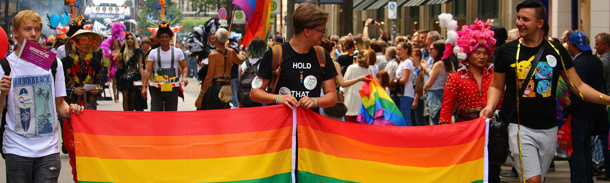
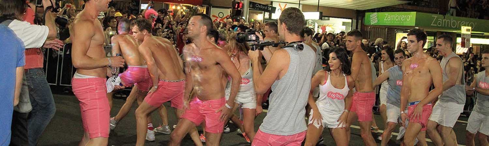

פסטיבל המרדי גרא
חגיגה ארוכה של פסטיבלים, צבעים, גאווה, ומלא אהבה ללא גבולות.
למי הפסטיבל מיועד?
למי שאוהב מסיבות רחוב, הופעות, תחפושות, ומאמין באהבה חופשית ללא הבדלי דת, גזע, מין ומגזר.

מה עושים בפסטיבל?
כחלק מחגיגות פסטיבל המרדי גרא אשר נמשכות מספר שבועות, מתקיימים מספר אירועים ברחבי העיר סידני:
- מצעד הגאווה של סידני - נמשך לאורך של קילומטר וחצי. על פי המסורת, כל שנה המצעד נפתח על ידי קבוצת רוכבות על אופנונע (Dykes on Bikes) לאחר מכן מצטרפות הבמות הנעות שעליהן ניתן למצוא רקדנים, אנשים מחופשים והופעות חיות. כל שנה נבחר ידוען להיות "שר המצעד" אשר מוביל מוביל את המצעד השנתי.
Sydney Mardi Gras 2012, by Eva Rinaldi is licensed under CC BY-SA 2.0
מה מקור הפסטיבל?
הפסטיבל מבוסס על מנהג נוצרי שנחגג ארבעים ימים לפני חג הפסחא. במהלכו נמנעים בני הדת מאכילת בשר. תענית זו מתחילה תמיד ביום רביעי, והיום שלפניה מכונה "יום שלישי השמן", מהביטוי "מרדי גרא" בצרפתית. בפברואר 1981 במקביל לחגיגות הדתיות של המרדי גרא, התקיים מצעד מחאתי נגד החוק שאסר בזמנו על קיום יחסים הומוסקסואלים. מצעד זה נקרא "המרדי גרא ההומוסקסואלי של סידני". בשנת 1984 בוטל החוק שאסר על יחסים הומוסקסואלים וחגיגת האהבה התמזגה עם הפסטיבל. מאז אותה שנה הפך פסטיבל המרדי גרא מאירוע דתי לאירוע תרבותי.
Sydney Gay & Lesbian Mardi Gras Parade 2011, by Will Choi is licensed under CC BY-SA 2.0
עובדות מעניינות
- פסטיבל המרדי גרא הוא אחד הפסטיבלים הגדולים בעולם מבחינת כמות אנשים שמגיעים אליו!
- ב2018 השחקנית וזמרת שר הופיעה במסיבה לאחר המצעד. הכרטיסים למסיבה אזלו בשנה זו עוד לפני ששר הודיעה באופן רשמי על הופעתה, בעקבות ציוץ שלה בטוויטר המרמז על הגעתה.
- לראשונה, במצעד הגאווה של סידני בשנת 2018 התקיימה כחלק מהחגיגות חתונה של זוג גברים מאוהבים.
- בסידני שבאוסטרליה יש חוק האוסר על כניסת קהל למועדונים וברים לאחר השעה 1:30 בלילה, ואיסור הגשת אלכוהול מ3:00 בלילה. לכבוד הפסטיבל, חוק זה בזה בוטל באופן חד פעמי .

Sydney Gay & Lesbian Mardi Gras Parade 2011, by Will Choi is licensed under CC BY-SA 2.0
טיפ מאיתנו:
הזמינו מקומות מראש! מצעד הגאווה של סידני הוא אחד האירועים הגדולים והחשובים לא רק למתגוררים בסביבה, גם לאלפי התיירים שמגיעים להשתתף באירועים מידי שנה. לכן, המלצה שלנו היא לסגור כמה שיותר מוקדם מקומות לינה בסביבה ולרכוש כרטיסים לאירועים השונים.